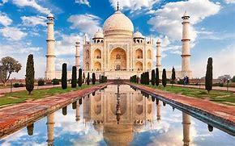
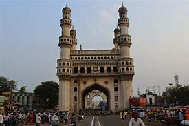
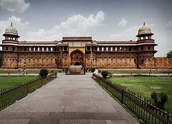

The Taj Mahal , originally the Rauza-i-munawwara is an ivory-white marble mausoleum on the southern bank of the river Yamuna in the Indian city of Agra. It was commissioned in 1632 by the Mughal emperor Shah Jahan (reigned from 1628 to 1658) to house the tomb of his favourite wife, Mumtaz Mahal; it also houses the tomb of Shah Jahan himself. The tomb is the centrepiece of a 17-hectare (42-acre) complex, which includes a mosque and a guest house, and is set in formal gardens bounded on three sides by a cr…
The Charminar (lit "four minarets") constructed in 1591, is a monument and mosque located in Hyderabad, Telangana, India. The landmark has become known globally as a symbol of Hyderabad and is listed among the most recognized structures in India. It has also been officially incorporated as the Emblem of Telanganafor the state of Telangana. The Charminar's long history includes the existence of a mosque on its top floor for more than 400 years. While both historically and religiously significant
Agra is a city on the banks of the Yamuna river in the Indian state of Uttar Pradesh, about 210 km south of the national capital New Delhi. With a population of roughly 1.6 million, Agra is the fourth-most populous city in Uttar Pradesh and twenty-third most populous city in India. Agra's period of historical importance began during Sikandar Lodi's reign, but the golden age of the city began with
